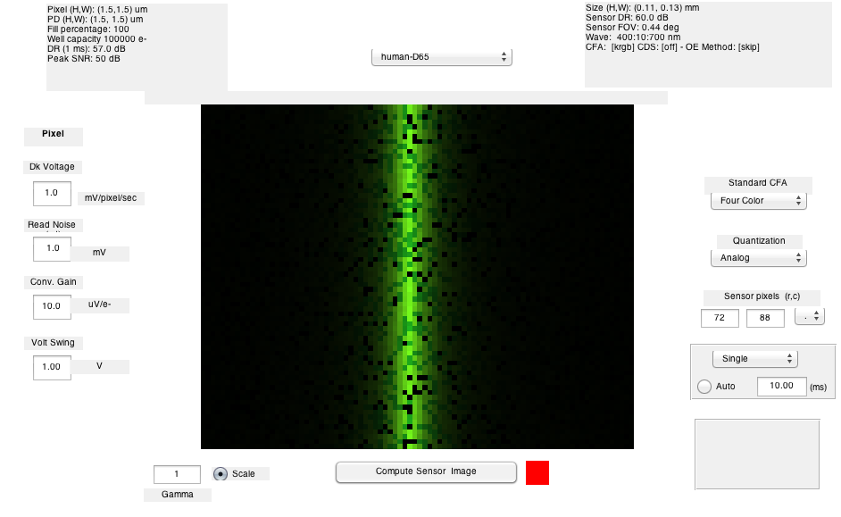
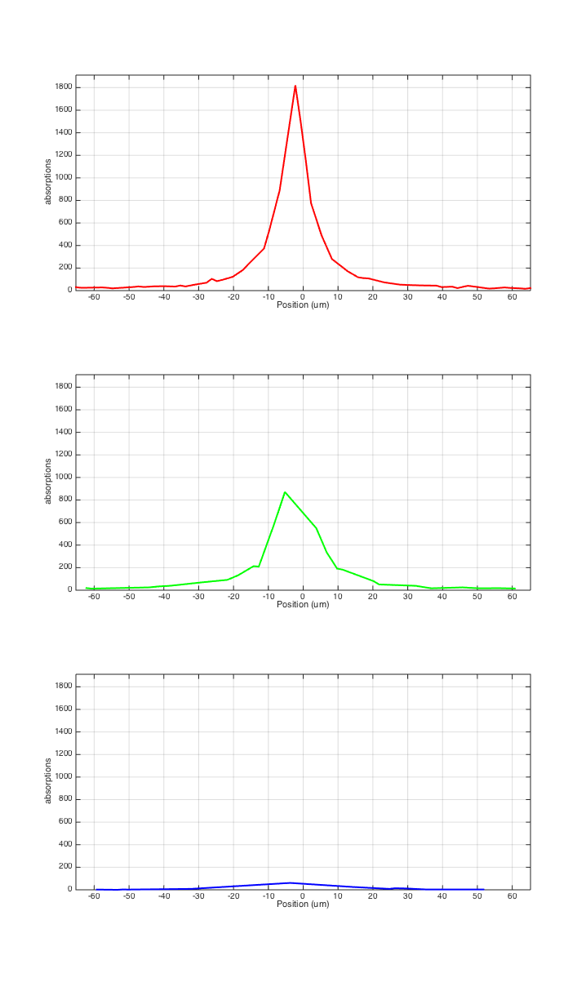
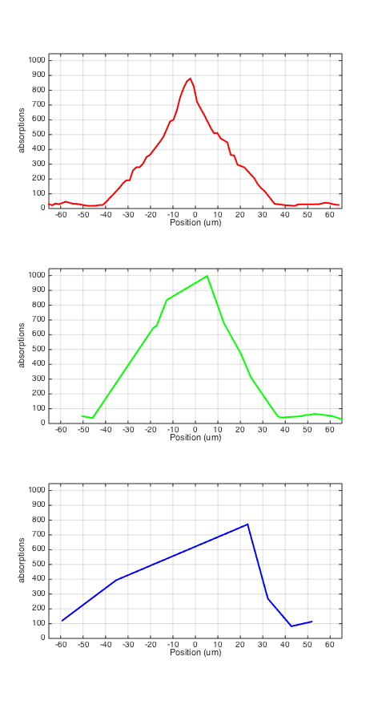
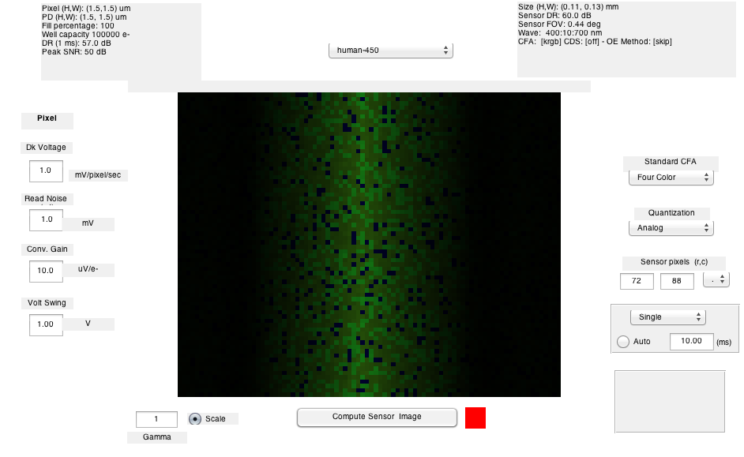
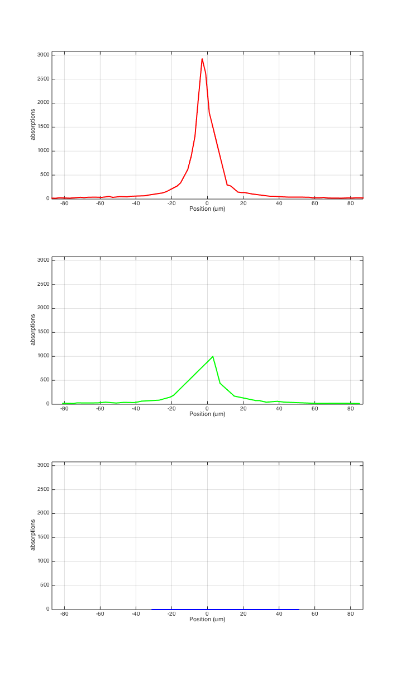
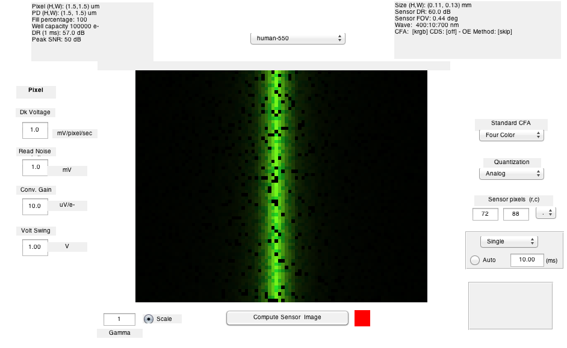
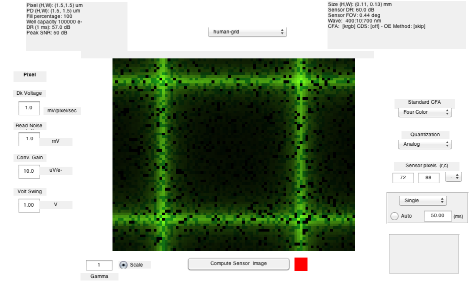
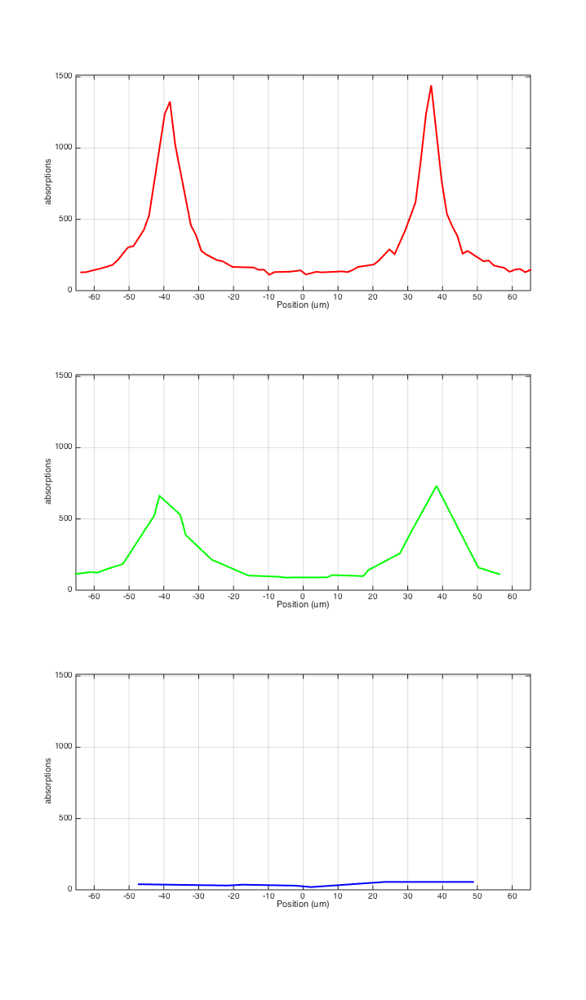
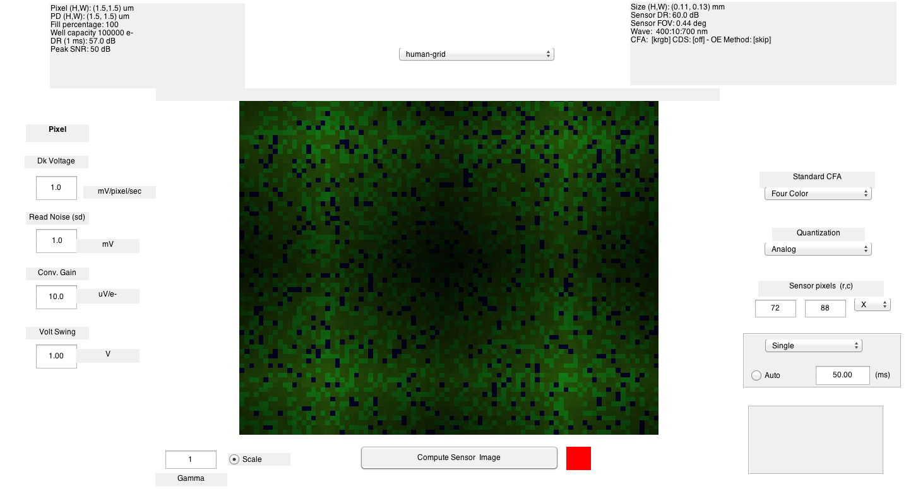
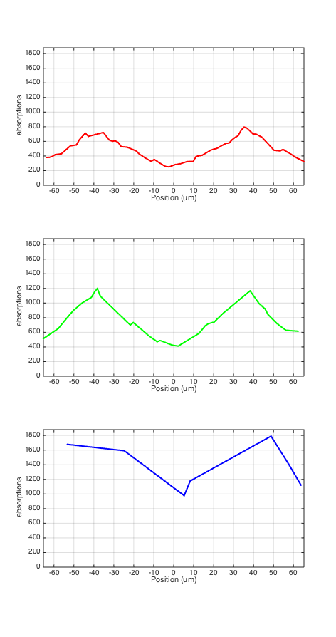

t_humanLineSpread
Illustrate the photon absorptions from a line stimulus.
This iillustrates the practical measurement of the human line spread function, including photon noise, irregular spacing, and so forth.
We illustrate the result for various spectral power distributions of the line stimuli, as well as the sum of a few nearby lines.
Copyright Imageval LLC, 2012
Contents
- Initialize
- Create a line scene, human optics, and a human sensor
- Compute and display
- Plot a line showing the photon absorptions for the broadband stimulus
- Change the line scene to 450nm and plot
- Show the 450 nm image
- Show the spread of the line at 550 nm
- Show the 550 nm image
- Create a small grid pattern and image it on the sensor
- Plot a line through the two grid lines
- Show the 450 nm version of the grid. Surprising, hunh?
Initialize
ieInit;
Create a line scene, human optics, and a human sensor
This is a broad band stimulus, with a spectral power distribution of daylight, 6500 K. We set the field of view to one degree.
The optics are the estimated human optics, as per Marimont and Wandell in the mid-90s.
The sensor has an approximation to the human cones, with random positions of the three cone types.
lineS = sceneCreate('line d65'); lineS = sceneSet(lineS,'h fov',1); oi = oiCreate('human'); sensor = sensorCreate('human'); sensor = sensorSet(sensor,'exp time',0.010);
Compute and display
oi = oiCompute(lineS,oi); sensor = sensorCompute(sensor,oi); sensor = sensorSet(sensor,'name','human-D65'); vcAddAndSelectObject(sensor); sensorWindow('scale',1);
Plot a line showing the photon absorptions for the broadband stimulus
y = sensorGet(sensor,'cols')/2; xy = [0 y]; sensorPlotLine(sensor,'h','photons','space',xy);
Change the line scene to 450nm and plot
preserveLuminance = 1; line450S = sceneInterpolateW(lineS, 450, preserveLuminance); oi450S = oiCompute(line450S,oi); sensor = sensorCompute(sensor,oi450S); sensor = sensorSet(sensor,'name','human-450'); y = sensorGet(sensor,'cols')/2; xy = [0 y]; sensorPlotLine(sensor,'h','photons','space',xy);
Show the 450 nm image
vcAddAndSelectObject(sensor); sensorWindow;
Show the spread of the line at 550 nm
preserveLuminance = 1; line550S = sceneInterpolateW(lineS,550,preserveLuminance); oi550S = oiCompute(line550S,oi); sensor = sensorCompute(sensor,oi550S); sensor = sensorSet(sensor,'name','human-550'); y = sensorGet(sensor,'cols')/2; xy = [0 y]; sensorPlotLine(sensor,'h','photons','space',xy);
Show the 550 nm image
vcAddAndSelectObject(sensor); sensorWindow;
Create a small grid pattern and image it on the sensor
imgSize = 128; lineSeparation = 32; gridS = sceneCreate('gridlines',imgSize,lineSeparation); gridS = sceneSet(gridS,'h fov',1); oi = oiCompute(gridS,oi); sensor = sensorSet(sensor,'exp time',0.050); sensor = sensorCompute(sensor,oi); sensor = sensorSet(sensor,'name','human-grid'); % Show it vcAddAndSelectObject(sensor); sensorWindow;
Plot a line through the two grid lines
The
y = sensorGet(sensor,'cols')/2; xy = [0 y]; sensorPlotLine(sensor,'h','photons','space',xy);
Show the 450 nm version of the grid. Surprising, hunh?
This version is very blurred, of course. Surprisingly so.
grid450S = sceneInterpolateW(gridS,450,preserveLuminance); oi450S = oiCompute(grid450S,oi); sensor = sensorSet(sensor,'exp time',0.050); sensor = sensorCompute(sensor,oi450S); sensor = sensorSet(sensor,'name','human-grid'); vcAddAndSelectObject(sensor); sensorWindow; sensorPlotLine(sensor,'h','photons','space',xy); 